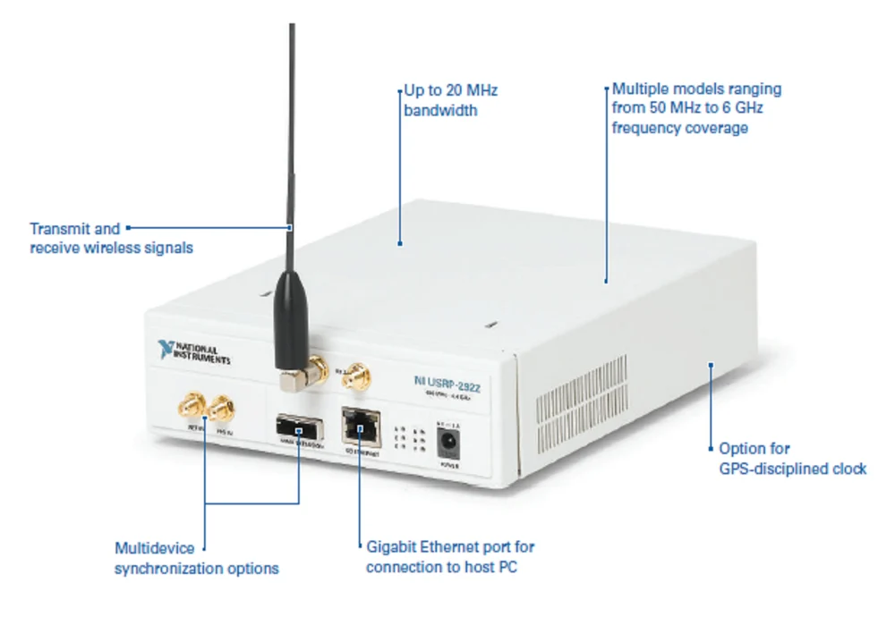

Français - SDR Blackbook – Carnet de terrain & hacks¶
Bienvenue dans les bas-fonds des réseaux radio.
Ici, la théorie croise le hacking de terrain, et tout est reproductible — si tu oses.
Résumé
Ce guide brut s’adresse à celles et ceux qui veulent construire, casser et comprendre les réseaux sans fil — pour de vrai.
De la périphérie au cœur : Du sniffing GSM/EDGE avec une clé USB à 20 € à la création de ta propre BTS virtuelle.
Crypto réelle, pas mythe : Casse l’A5/1 façon attaque réelle. Comprends ce que les protocoles révèlent.
Hardware ouvert, esprit ouvert : OsmocomBB, dongles SDR, attaques GPU — aucun NDA, tout public.
Chaque script, chaque hack : Testé sur du vrai matos. Aucun vaporware. Tutoriel = testé IRL.
Si tu en as marre des “whitepapers” PDF et des vidéos clickbait YouTube, tu es au bon endroit.
